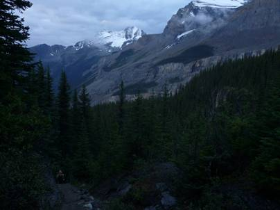
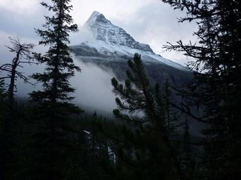
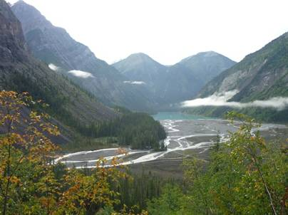
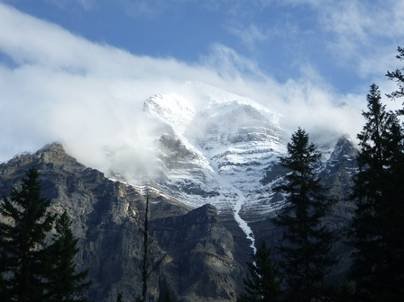
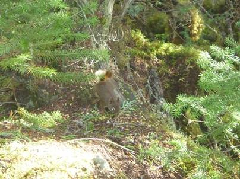
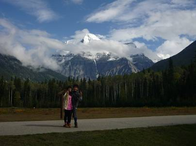
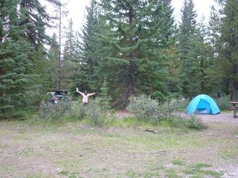
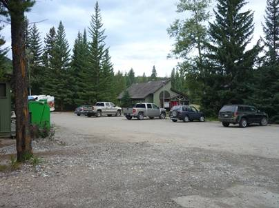

５日目(9/8)～下山～
Mt.RobsonProvincialParkto Jasper



まだ暗いうちに起床し、朝もやの中を登山口に向け出発。昨日は午後からは雲が出てしまい、ロブソンを見ることはできなかったが、この日は比較的晴れていたのでロブソンの西壁を見る事ができた。まさに、断崖絶壁だ。


登山口は近い。万年雪を湛えるロブソンを背に、登山口を目指した。この日もリスが出てきてくれた。カナディアンロッキーにはシマリスやジリスなど何種類ものリスが生息しているそうだ。

無事に下山。観光案内所の前で、ロブソン山を前に記念撮影をした。


この日の目的地はアルバータ州のジャスパー。国立公園内のため、州境近くに設けられたゲートで入場料金を支払う必要がある。ジャスパーでもキャンプ場で宿泊することにした。ジャスパーの街から南に少し車を走らせたWhistlers山のふもとにあるWhistlersキャンプ場だ。ここも広大な敷地を有し、自然をテーマにした一大テーマパークのようである。上の左側の写真が僕たちの生活スペース。家が一軒建つくらいの敷地はあるだろう。まおの風邪が治るまで登山はできないので、ここで2泊することにした。